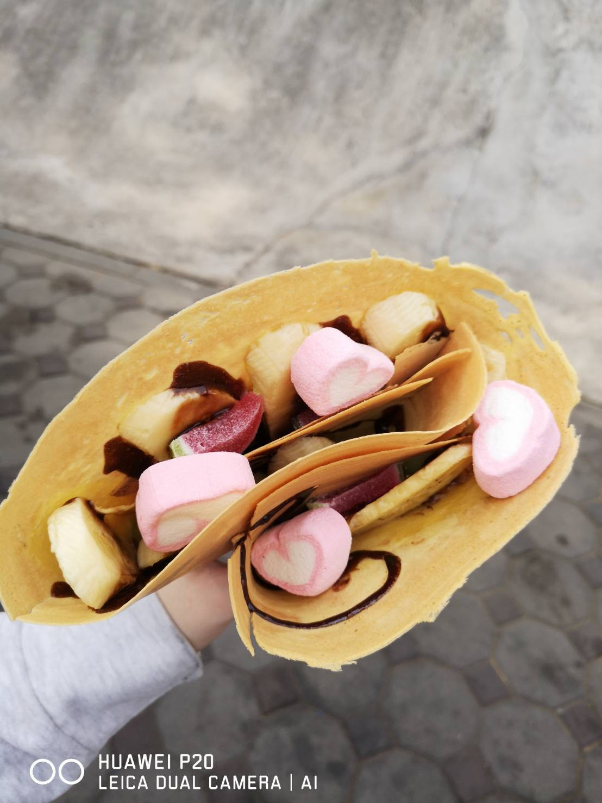
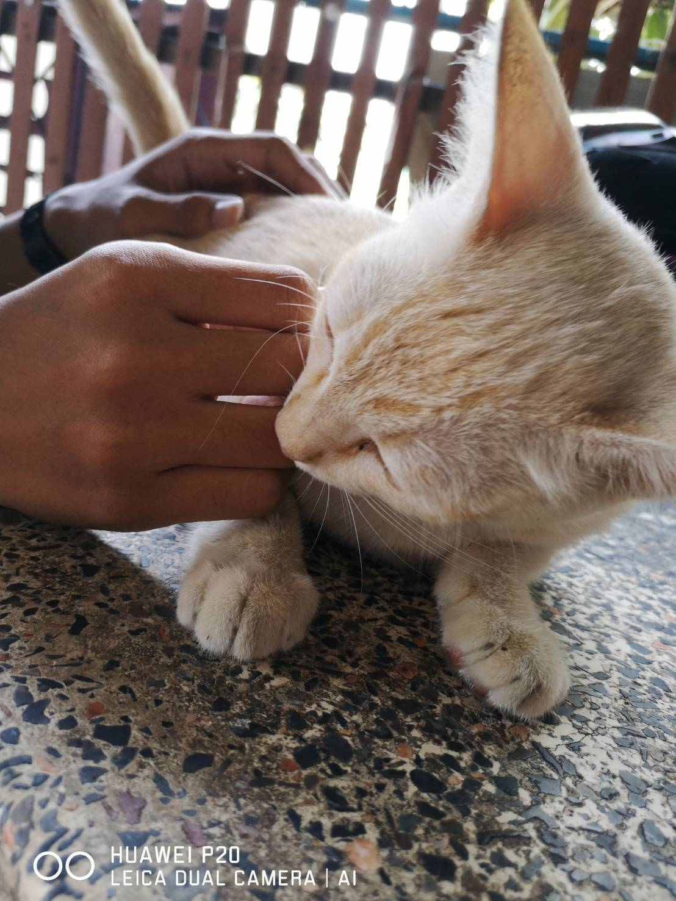

Boom
Welcome to My World
กดที่นี่เพื่อไปยัง facebook ซึ่งเป็นช่องทางติดต่อข้าเจ้าเน้อ
Thank you.
ตัวตนของข้าเจ้า
กล่าวแบบแมนๆคุยเลยและกัน เป็นทาสแมวงับ 3///3 บ้าเกมหน่อยๆ หลักๆที่คุยได้ก็...
Thesim4(Origin:kumaboom2203)
,Rov
,ZEPETO (ID:VLF01A)
,Nikki360(add friend: 102500292 //addมาก็กดใจบ้านเล็กให้หน่อยเน้อ แหะๆ)
เป็นติ่งด้วยนะ...
☆My fandom☆ :
≛ eoxL
≛ wannable ,may
≛ AROHA
≛ NCTzen
แล้วก็เป็นแฟนตัวยงของเจ้าหมีขี้เกียจRilakkuma ชอบทั้งเจ้าคุมะ โคริ โทริ เยยยยยยย
เมนหลักยกให้เป็นเจ้าคุมะ เพราะขี้เกียจเหมือนกับข้าเจ้า5555
ช่องทางติดต่อก็ facebook เป็นหลักงับ
ความมุ่งมั่น
เมื่อก่อนเคยมุ่งมั่นอยากเป็นนักเขียนcomic...เคยซื้อหนังสือมาหลายเล่มทั้งแบบวาดมือ แบบโปรแกรม2D แบบAnimation แต่ก็ต้องหยุดฝันนั้นไปเพราะมองว่ามันไม่ใช่ทางเราเห็นคนอื่นวาดเขาออกมาดีกว่ามาก ความสามารถเราไม่ถึงจริงๆ เลยกลับมารื้อค้นสมองตัวเองใหม่จนได้พบกับตัวตนที่ว่าเป็นสายคอมมาตั้งนานแล้วแต่เราแค่มองข้ามมันไป พอคิดได้ก็มาถึงจุดที่ต้องหาที่เรียน(ช่วงสอบเข้ามหาลัยพอดี) มันก็ยังดีที่ไม่สายเกินไป เรายังค้นหาตัวเองเจออยู่ เลยมุ่งมั่นที่จะเข้าทางสายคอมให้ได้จนมาอยู่ที่นี่
...มหาวิทยาลัยศิลปากร...รูปภาพบอกถึงเรื่องราว..
ไม่มีอะไรบอกถึงตัวเราได้เท่ารูปภาพที่เราถ่ายจากทุกมุมที่เป็นตัวเรา เมือเอาเมาส์วางที่รูปมีเรื่องราวด้วยนะ อ่านด้วยล่ะ เนี่ยแหละตัวข้าเจ้า^^
Image Gallery
ลูกพี่ บาดแผลคือศักดิ์ศรี
ตั้งใจเลือกมาก เตรียมการไว้หลายเดือนเลยแหละ-///-
Nikki สายหวานน่ารักๆงับ ชอบแนวนี้ที่สุด ชุดน้องแนวนี้แพงมากTT
Nikki แนวสาวห้าวๆแต่รักการอ่าน พยายามแต่งหลายๆแนวดู อันนี้ดูดีสุดและ5555
ชอบที่สุดคือ "ซาบะดอง" ร้านใหนก็ไม่อร่อยเท่าร้านนี้ ข้าชิมมาเยอะแล้ว อิอิ
ถึงป๊อปคอนเมเจอร์จะอร่อยแต่ถ้างบน้อยข้าก็จะมาทางนี้...

ปิ้งย่างที่กินโหดที่สุดตั้งแต่กินมา555
ไอติมอร่อยสุดต้อง "ติมเภสัทศิลปากร"

เครปนมที่ใส่แต่ของหวาน จิงๆชอบแนวหมูหยองพริกเผาไรงี้ อยู่ศิลปากรทั้งทีต้องกินหลายแนว
โคริ ในโลกพาสเทลแหละ
เฟรนฟรายที่อร่อยที่สุด ไปเมื่อไหร่ต้องสั่งทุกที
มองแล้วเหมือนตัวเองไงไม่รู้5555
เจ้าเหมียวกินแมวเลียครั้งแรก รู้ได้จากการที่น้องไม่เลียที่ซอง น้องกัดเลยแหละ5555
ดูก็รู้ว่าใครจะต่อ5555
ตัวละครที่ชอบที่สุด ตั้งแต่ดูมา
น้องมีชื่อว่า ต้าซู ปุยปุย เขี้ยวกุด
ก๋อยแซลมอน สั่งรัวๆอร่อยสุดๆ
อร่อยกว่ากิมจิ ก็ข้าวหมูเกาหลีเนี่ยแหละ
ลืมชื่อแล้ว รูปแค่สดุดตาที่สุด555
น้องดาวน้อย

น้องที่ร้านส้มตำ มีเป็นขบวนการแมวเหมียวเลยนะ
มีคนเลี้ยงวันเกิด-///-
วาฟเฟิลที่อร่อยที่สุด
โมเม้นใน ZEPETO
Nikki สายเวท
nikki แนวจีนๆหน่อยๆ
เจ้าเหมียวหลับปุยยยย